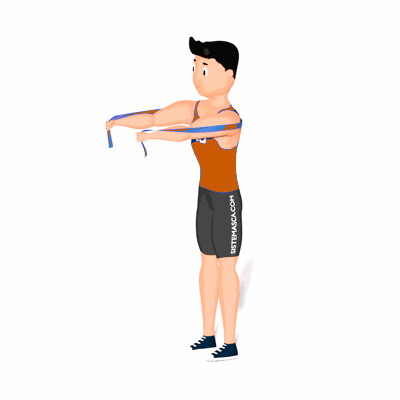

Ativação de Serrátil Anterior

O exercício tem como objetivo trabalhar a ativação do músculos Serrátil Anterior e mobilização do ombro, auxiliando na realização de outras atividades físicas e prevenindo eventuais lesões.
Ficha Técnica
Tipo: Pilates
Grupo Muscular: Peito
Aparelho: Nenhum
Músculos: Nenhum
Como realizar
- Passe a faixa elástica por trás, nas costas;
- Segure as pontas do elástico um em cada mão, então mantenha os braços esticando o elástico na altura do peito;
- Leve os ombros para frente o máximo que conseguir, retorne levando o ombro o máximo que conseguir para trás;
- Retorne a posição inicial e repita os movimentos.
 RC STORE
RC STORE